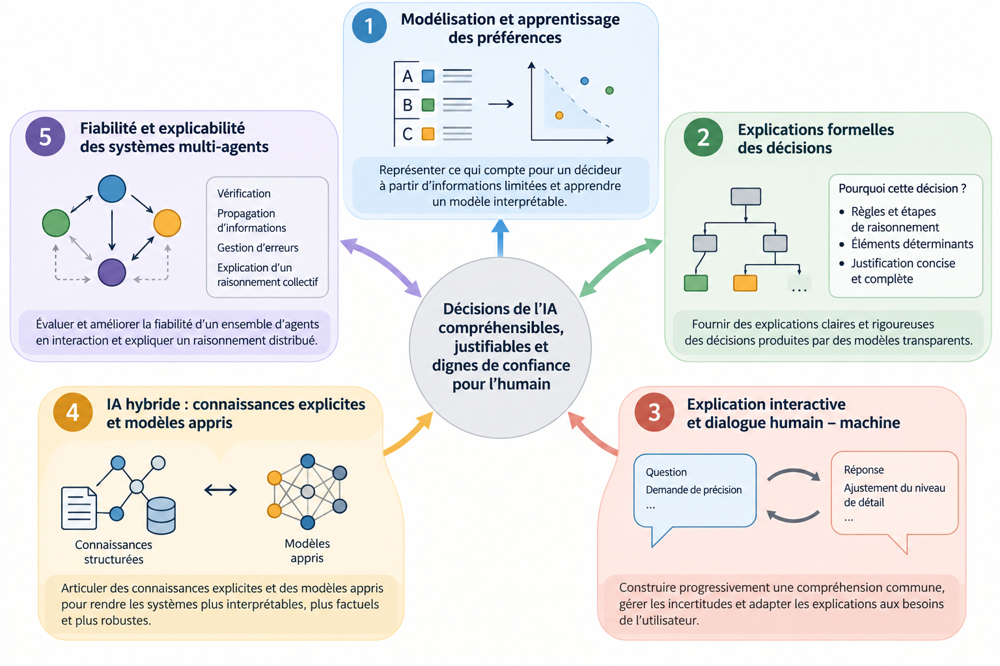

Topics of interest
My research addresses a central question: how can decisions produced by AI systems be made understandable, justifiable and trustworthy for the people who use them or are affected by them? I have developed this question along five research themes, following the evolution of the systems studied: from transparent decision models to learned models, and then to multi-agent systems.

1. Preference modelling, elicitation and learning
My early work focuses on the formal representation of a decision maker's preferences in multiple criteria decision aiding. It covers:
- sorting models, such as MR-Sort or constrained sorting;
- reference-point-based models;
- learning models from data, including data that only partially satisfy monotonicity assumptions.
The aim is to build models that are faithful to the decision maker, identifiable from limited information, and interpretable by design. This theme provides the formal foundation for my subsequent work (PhD theses of Maamar, Liu, Mammeri, Minoungou, Tlili).
2. Formal explanations of decisions from symbolic models
A transparent model does not necessarily produce understood decisions. I study the design of explanation schemes grounded in deductive reasoning, their formal properties (soundness, completeness, conciseness), and the algorithms that compute them. I address three families of models:
- preference aggregation (Belahcène, Amoussou);
- optimization systems, including the explanation of scheduling solutions and of fairness in assignment problems (Lerouge, Sabatino);
- rule-based systems, possibilistic or fuzzy, including the generation of textual justifications (El Mernissi, Baaj).
3. Interactive explanation and human–machine dialogue
I view explanation not as an object produced once and for all, but as an interactive process in which the system and the user jointly build understanding, handle inconsistencies and adjust the level of detail.
I work on explanatory dialogue protocols and on the role of uncertainty in these exchanges. This work addresses transparent image recognition (Thauvin) as well as preference elicitation (Gaudillier). This theme connects my work on preferences (theme 1) and on formal explanations (theme 2).
4. Explainability and hybridization of learned models
How can neural models and LLMs be made more interpretable, more factual and more robust? I pursue two complementary approaches:
- Explaining learned models. I explain what they have learned, for instance through concepts for foundation models, or for models operating on dynamic graphs.
- Combining them with explicit knowledge. This may take the form of knowledge graphs, conceptual models or rules, used to ground and control their reasoning.
Application areas include healthcare, disinformation detection, certification of critical systems and IT system monitoring (PhD theses of Arab, Miccinilli, Sivy, Kim, Claye, Faye, Yameogo).
5. Reliability and explainability of LLM-based multi-agent systems
This is the theme I am currently opening. The object of study shifts from an isolated model to a collective of interacting agents, which raises specific questions:
- the propagation of factual errors or attacks between agents;
- the assessment of reliability at the system level;
- the explanation of distributed reasoning.
It builds on my work on factuality (theme 4) and on formal and interactive explanation (themes 2 and 3). I am developing it notably within the TMAS research chair.
Common thread
My research follows a coherent trajectory. I first explained transparent models (themes 1 and 2), then made opaque models explainable by bringing in symbolic knowledge (theme 4). I am now working on making collective systems explainable (theme 5). Interaction (theme 3) remains the cross-cutting mode of explanation throughout.